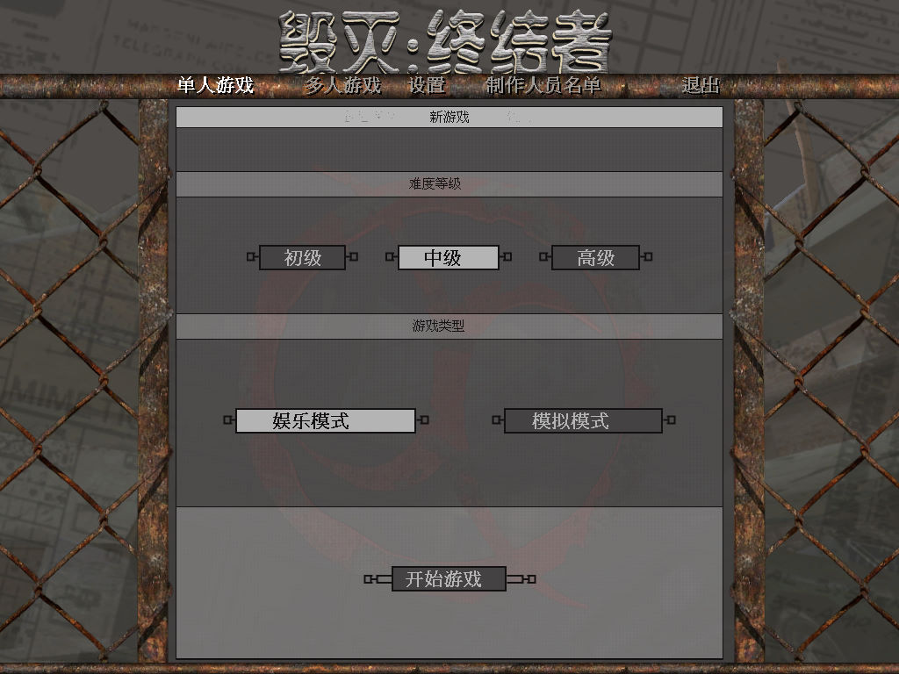
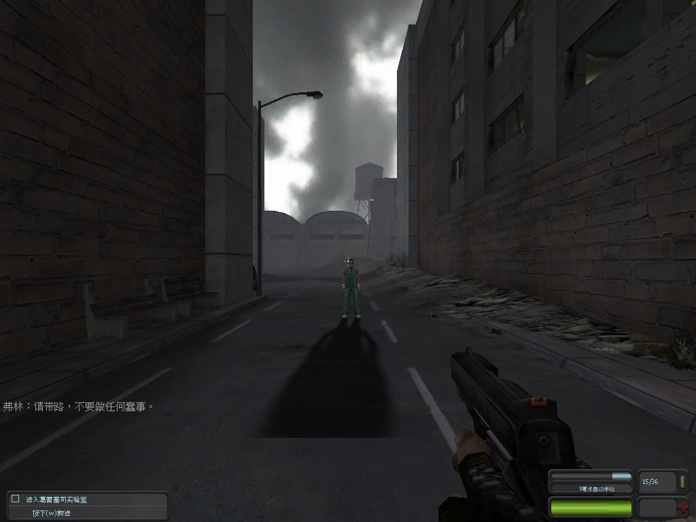

名稱：毀滅：終結者 (Devastation，簡中版)
簡介：Digitalo 2003年出品的第一人稱射擊遊戲，由Groove代理發行，大陸由陽光娛動簡中
化並代理發行 [待補]。


保護：簡中版為光碟（不明序號：5B36F-976AA-6A471-58B8D-92B7B），破解碼：
devastation.exe
75 1A 50 50 68
EB -- -- -- --
備註：簡中版為1.38版
備註：本遊戲簡中版光碟有2003/8/9和2003/9/19兩種，後者為更新版。
檔案：chs_update.rar = 簡中更新檔（2003/9/19）